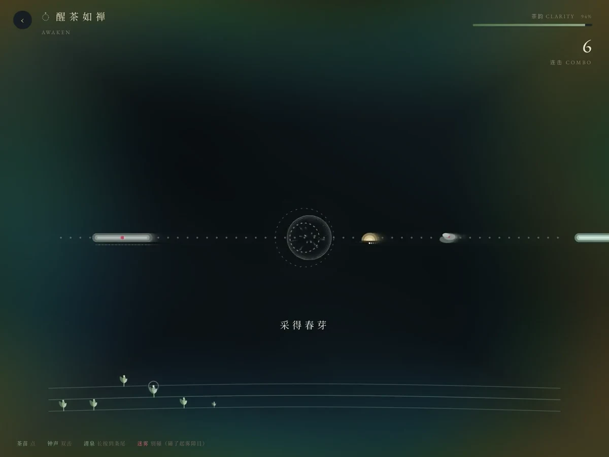
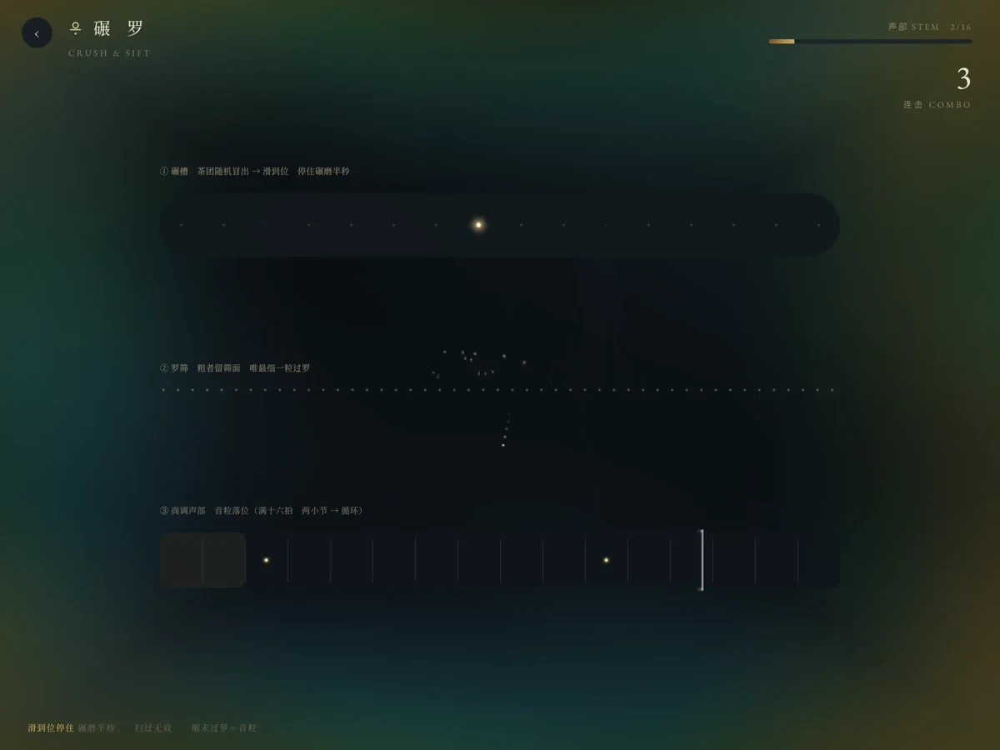
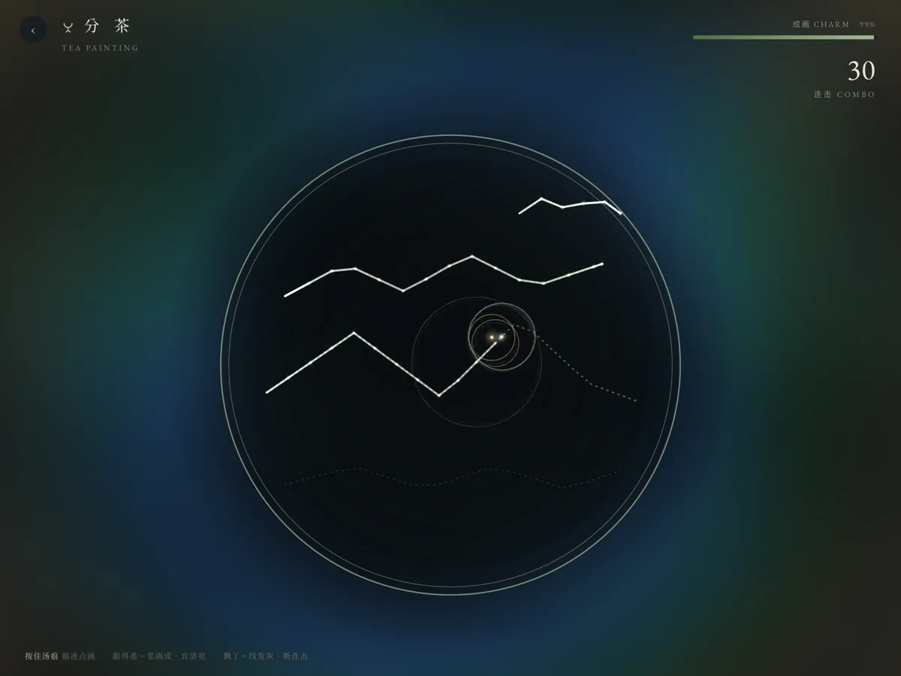
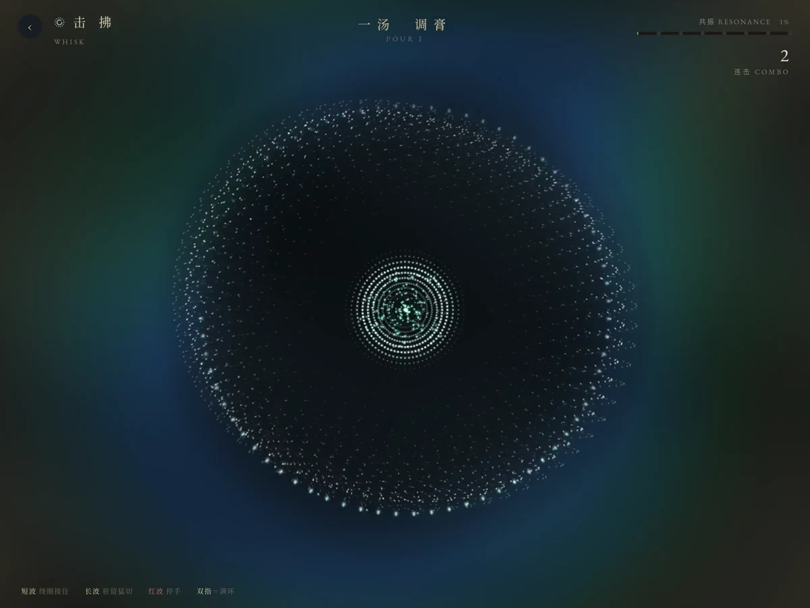

宋代茶百戏手作体验及音游数字化设计
茶弦记
Tea String
Chronicles
以茶为弦，以器为谱。
让一场宋代茶事，成为可以亲身参与的游戏。
- 开始时间
- 负责事项
- 我负责主要交互程序、交互设计与体验视觉，并做茶筅动作和屏幕反馈的联动开发。
- 合作
- 网易雷火联合课程，团队共同创作。
- 进度
- 四段游戏原型可试玩，已做过课程现场展示；展厅空间为设计方案。
前期调研
从径山寺的茶宴、点茶流程与器物出发。
径山寺调研地图
茶百戏工具
十二茶先生 · 器物图像提取
径山寺茶宴流程
- 张茶榜
- 击茶鼓
- 恭请入堂
- 煎汤点茶
- 行盏分茶
- 说偈吃茶
宋代点茶步骤
- 碎茶
- 碾茶
- 罗茶
- 茶末置盒
- 撮末于盏
- 点茶
- 搅拌茶沫
- 置茶托
草图转译
从调研中的器物与动作，推演玩法、角色和界面。
玩法与结构
角色与器物
界面与粒子
一间可以入席的茶文化展厅
从观展到动手点茶，把声音、器物与游戏放进同一场茶事。
沿展厅游览、在茶席驻留，再进入核心茶室完成击拂。展具与茶饮周边，把数字体验接回真实器物。
四段茶事，一盏茶
左右切换四段游戏，展开击拂中的动作、节奏与茶沫。



跟随光轮击拂
真实茶筅的运动进入游戏，同一动作同时推动点茶与屏幕反馈。
让击拂成为演奏
光轮给出节奏，手的转动点亮盏沿；画面与乐音回应身体，而真实的茶沫由击拂形成。
光轮抵达，绕圈接奏
扫过的盏沿会短暂保留一圈青色粒子；它与抵达的短波相遇，完成一次接奏。
一轮，接下一音
短波命中即消散，并迸出亮点、叠加清亮的音色。光轮既是提示，也是可被演奏的音符。
驻留期间，持续击拂
长波抵达后仍停留在盏沿，持续转动会在驻留窗口内多次切中；过早停手会减少切奏次数。
把一个长音奏开
每次切中都累积连击、叠加亮音；切奏足够，最后以一圈粒子绽放回应。
红波来时，停手
已有的青色环会很快衰退；留出停顿，让红波安全经过，形成动与静的节奏。
停顿也属于乐句
不停手会误触红波，触发警示、断连击与共振回退。试着切换动作，对比画面反应。
茶粉聚拢，茶沫渐生
白色粒子把茶汤的变化转成可见的进程：初搅聚拢，随后变白、增密、扩展，最后收束成纹。
用七汤组织节奏
原型随共振推进七个阶段，逐步增加波形密度、长波与红波比例，并叠加编曲层次。
光轮到达，乐音落下
以每分钟 80 拍安排光轮抵达的时刻；底层乐句持续铺陈，接准时叠加亮音，长波由连续切奏发声。
让节奏有疏有密
七汤逐步叠加鼓点、低音与拨弦，并增加半拍光轮。手在同一拍速下选择接奏、持续与停顿，形成疏密变化。
击拂 · 原游戏渲染 · 定向机制演示 · 自动操作
摘茶
点、双击、按住，把茶声采集成声场。
碾罗
移到茶团上停留半秒，把茶末收进十六个音格。
分茶
跟随发光汤痕描摹，让手势连成山水与旋律。
茶粉铺开，初始光轮疏缓。
茶粉聚拢起白，鼓点开始进入。
细沫渐生，拨弦与半拍光轮加入。
白沫扩展，短波、长波与停顿交错。
粒子增密泛白，节奏层次继续加深。
茶沫更厚，鼓点和加拍更加密集。
茶沫趋于饱满，以粒子茶纹收束。
让真实茶筅，成为游戏输入
手在点茶，屏幕回应击拂的节奏。把屏幕里的动作，带回真实的一盏茶。
真实茶筅
柄端可拆卸套筒
M5StickC Plus
陀螺仪 · 主控 · USB
屏幕回应
绕圈频率 · 粒子 · 节奏
动作怎样进入游戏
我用转动强度来控制绕圈频率：动作越急，屏幕击拂越快；停手后，反馈逐渐回落。
实体接入方案
模块收在柄端套筒内，与真实茶筅一起运动。现有固件输出 USB 串口数据，经电脑转发后可送入游戏。
结构与动作映射示意，依据现有固件与游戏输入接口绘制。滑杆模拟动作强度，实体联动过程需另行录制。
空间怎样承接这场游戏
外圈游览与观看，内圈入席与交互。让人从了解茶事，逐步走向亲手完成。
先游览，再入席
器物与投影沿行进路径展开，茶席留出驻足、交流和手作的位置。
以动作连接光与声
核心茶室以交互茶席和环绕投影回应击拂，形成体验的高潮。
查看两处空间推演
让器物成为空间的一部分
从圆、层架与对景提取形态，用同一组展具语言连接陈列、观看与茶席。
以层叠组织茶器与观看高度。
以圆形界面围合器物的视线。
让茶器、植物与框景共同入画。
从一次游戏，回到日常的一杯茶
把关卡中的茶先生转为徽章茶模；用杯盖中的清水临摹茶百戏，让奖励成为下一次参与的工具。
网易雷火联合课程
茶弦记现场记录 · 共 5 张照片。
把文化，留在参与之中
游戏、空间、展具与周边，共同构成茶弦记的体验方案。